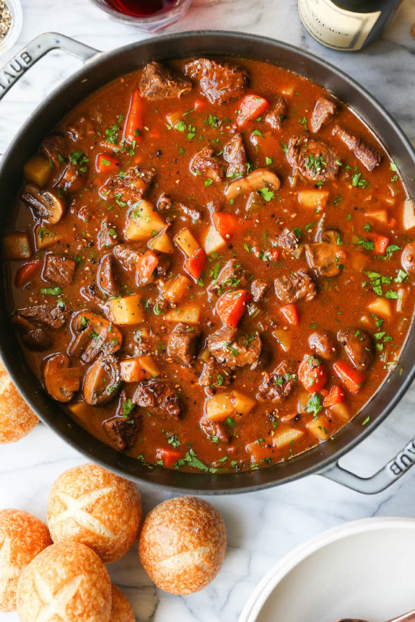

Hearty Vegetable Stew

Description
A tasty vegetable stew, healthy and filling. Best of all,
it's cheap to make!
Ingredients
- 4 Potatoes
- 1 Onion
- 3 carrots
- 2 stalks celery
- 6 cups vegetable broth
Directions
- Sautee the onion, carrots, and celery until soft.
- Deglaze with some cooking wine.
- Add the vegetable broth and bring to a boil.
- Add your potatoes, and boil until done.